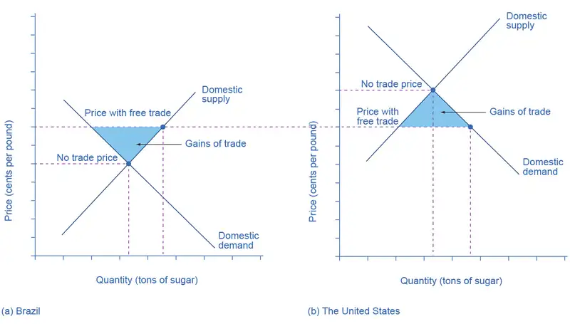
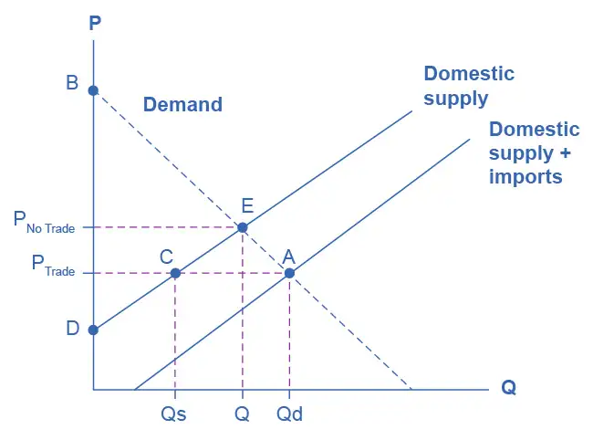

Chapter 34: Globalization and Protectionism¶
Introduction¶
Bring It Home: What’s the Downside of Protection?
Governments are motivated to limit and alter market outcomes for political or social ends. While governments can limit the rise in prices of some products, they cannot control how much people want to buy or how much firms are willing to sell. The laws of demand and supply still hold. Trade policy is an example where regulations can redirect economic forces, but it cannot stop them from manifesting themselves elsewhere.
Flat-panel displays, the displays for laptop computers, tablets, and flat screen televisions, are an example of such an enduring principle. In the early 1990s, the vast majority of flat-panel displays used in U.S.-manufactured laptops were imported, primarily from Japan. The small but politically powerful U.S. flat-panel-display industry filed a dumping complaint with the Commerce Department. They argued that Japanese firms were selling displays at “less than fair value,” which made it difficult for U.S. firms to compete. This argument for trade protection is referred to as anti-dumping. Other arguments for protection in this complaint included national security. After a preliminary determination by the Commerce Department that the Japanese firms were dumping, the U.S. International Trade Commission imposed a 63% dumping margin (or tax) on the import of flat-panel displays. Was this a successful exercise of U.S. trade policy? See what you think after reading the chapter.
Chapter Outline: Introduction to Globalism and Protectionism
In this chapter, you will learn about:
- Protectionism: An Indirect Subsidy from Consumers to Producers
- International Trade and Its Effects on Jobs, Wages, and Working Conditions
- Arguments in Support of Restricting Imports
- How Trade Policy Is Enacted: Globally, Regionally, and Nationally
- The Tradeoffs of Trade Policy
The world has become more connected on multiple levels, especially economically. In 1970, imports and exports made up 11% of U.S. GDP, while now they make up 32%. However, the United States, due to its size, is less internationally connected than most countries. For example, according to the World Bank, 97% of Botswana’s economic activity is connected to trade. This chapter explores trade policy—the laws and strategies a country uses to regulate international trade. This topic is not without controversy.
As the world has become more globally connected, firms and workers in high-income countries like the United States, Japan, or the nations of the European Union, perceive a competitive threat from firms in medium-income countries like Mexico, China, or South Africa, that have lower costs of living and therefore pay lower wages. Firms and workers in low-income countries fear that they will suffer if they must compete against more productive workers and advanced technology in high-income countries.
On a different tack, some environmentalists worry that multinational firms may evade environmental protection laws by moving their production to countries with loose or nonexistent pollution standards, trading a clean environment for jobs. Some politicians worry that their country may become overly dependent on key imported products, like oil, which in a time of war could threaten national security. All of these fears influence governments to reach the same basic policy conclusion: to protect national interests, whether businesses, jobs, or security, imports of foreign products should be restricted. This chapter analyzes such arguments. First, however, it is essential to learn a few key concepts and understand how the demand and supply model applies to international trade.
34.1 Protectionism: An Indirect Subsidy from Consumers to Producers¶
Learning Objectives
By the end of this section, you will be able to:
- Explain protectionism and its three main forms
- Analyze protectionism through concepts of demand and supply, noting its effects on equilibrium
- Calculate the effects of trade barriers
When a government legislates policies to reduce or block international trade it is engaging in protectionism. Protectionist policies often seek to shield domestic producers and domestic workers from foreign competition. Protectionism takes three main forms: tariffs, import quotas, and nontariff barriers.
Recall from International Trade that tariffs are taxes that governments impose on imported goods and services. This makes imports more expensive for consumers, discouraging imports. For example, in 2018, President Trump increased tariffs on Chinese-manufactured goods by 2–25%, including TVs, monitors, desktop PCs, smartwatches, and many other consumer goods. The intention behind the policy was to shelter U.S. manufacturers from competition, helping companies that operate domestically. China responded with tariffs on American goods, launching a trade war. President Biden retained these tariffs and considered additional ones, but as of August 2022, the administration was considering changes designed to reduce inflation.
Another way to control trade is through import quotas, which are numerical limitations on the quantity of products that a country can import. For instance, during the early 1980s, the Reagan Administration imposed a quota on the import of Japanese automobiles. In the 1970s, many developed countries, including the United States, found themselves with declining textile industries. Textile production does not require highly skilled workers, so producers were able to set up lower-cost factories in developing countries. In order to “manage” this loss of jobs and income, the developed countries established an international Multifiber Agreement that essentially divided the market for textile exports between importers and the remaining domestic producers. The agreement, which ran from 1974 to 2004, specified the exact quota of textile imports that each developed country would accept from each low-income country. A similar story exists for sugar imports into the United States, which are still governed by quotas.
Nontariff barriers are all the other ways that a nation can draw up rules, regulations, inspections, and paperwork to make it more costly or difficult to import products. A rule requiring certain safety standards can limit imports just as effectively as high tariffs or low import quotas, for instance. There are also nontariff barriers in the form of “rules-of-origin” regulations; these rules describe the “Made in Country X” label as the one in which the last substantial change in the product took place. A manufacturer wishing to evade import restrictions may try to change the production process so that the last big change in the product happens in their own country. For example, certain textiles are made in the United States, shipped to other countries, combined with textiles made in those other countries to make apparel—and then re-exported back to the United States for a final assembly, to escape paying tariffs or to obtain a “Made in the USA” label.
Despite import quotas, tariffs, and nontariff barriers, the share of apparel sold in the United States that is imported rose from about half in 1999 to about three-quarters today. According to the U.S. Bureau of Labor Statistics (BLS), estimated the number of U.S. jobs in textiles and apparel fell 44% from 2007 to 2014, and will fall by another 25% by 2024. Even more U.S. textile industry jobs would have been lost without tariffs. However, domestic jobs that are saved by import quotas come at a cost. Because textile and apparel protectionism adds to the costs of imports, consumers end up paying billions of dollars more for clothing each year.
When the United States eliminates trade barriers in one area, consumers spend the money they save on that product elsewhere in the economy. Thus, while eliminating trade barriers in one sector of the economy will likely result in some job loss in that sector, consumers will spend the resulting savings in other sectors of the economy and hence increase the number of jobs in those other sectors. Of course, workers in some of the poorest countries of the world who would otherwise have jobs producing textiles, would gain considerably if the United States reduced its barriers to trade in textiles. That said, there are good reasons to be wary about reducing barriers to trade. The 2012 and 2013 Bangladeshi fires in textile factories, which resulted in a horrific loss of life, present complications that our simplified analysis in the chapter will not capture.
Realizing the compromises between nations that come about due to trade policy, many countries came together in 1947 to form the General Agreement on Tariffs and Trade (GATT). (We’ll cover the GATT in more detail later in the chapter.) This agreement has since been superseded by the World Trade Organization (WTO), whose membership includes about 150 nations and most of the world's economies. It is the primary international mechanism through which nations negotiate their trade rules—including rules about tariffs, quotas, and nontariff barriers. The next section examines the results of such protectionism and develops a simple model to show the impact of trade policy.
Demand and Supply Analysis of Protectionism¶
To the non-economist, restricting imports may appear to be nothing more than taking sales from foreign producers and giving them to domestic producers. Other factors are at work, however, because firms do not operate in a vacuum. Instead, firms sell their products either to consumers or to other firms (if they are business suppliers), who are also affected by the trade barriers. A demand and supply analysis of protectionism shows that it is not just a matter of domestic gains and foreign losses, but a policy that imposes substantial domestic costs as well.
Consider two countries, Brazil and the United States, who produce sugar. Each country has a domestic supply and demand for sugar, as Table 34.1 details and Figure 34.2 illustrates. In Brazil, without trade, the equilibrium price of sugar is 12 cents per pound and the equilibrium output is 30 tons. When there is no trade in the United States, the equilibrium price of sugar is 24 cents per pound and the equilibrium quantity is 80 tons. We label these equilibrium points as point E in each part of the figure.
![This is a two-panel demand and supply graph, with quantity of sugar on the x-axis and price of sugar measured in cents per pound on the y-axis. The price-quantity pairs are plotted using the numbers from Table 34 01. The graph shows three sets of price outcomes in each country: no trade, free trade, and price with partial protectionism. The no-trade price in Brazil is lower than in the United States. Hence, when countries can engage in trade, the free-trade price will rise in Brazil and decrease in the United States.](img/cnx-econ3e-c34-001.webp)
Table 34.1 The Sugar Trade between Brazil and the United States
| Price | Brazil: Quantity Supplied (tons) | Brazil: Quantity Demanded (tons) | U.S.: Quantity Supplied (tons) | U.S.: Quantity Demanded (tons) |
|---|---|---|---|---|
| 8 cents | 20 | 35 | 60 | 100 |
| 12 cents | 30 | 30 | 66 | 93 |
| 14 cents | 35 | 28 | 69 | 90 |
| 16 cents | 40 | 25 | 72 | 87 |
| 20 cents | 45 | 21 | 76 | 83 |
| 24 cents | 50 | 18 | 80 | 80 |
| 28 cents | 55 | 15 | 82 | 78 |
If international trade between Brazil and the United States now becomes possible, profit-seeking firms will spot an opportunity: buy sugar cheaply in Brazil, and sell it at a higher price in the United States. As sugar is shipped from Brazil to the United States, the quantity of sugar produced in Brazil will be greater than Brazilian consumption (with the extra production exported), and the amount produced in the United States will be less than the amount of U.S. consumption (with the extra consumption imported). Exports to the United States will reduce the sugar supply in Brazil, raising its price. Imports into the United States will increase the sugar supply, lowering its price. When the sugar price is the same in both countries, there is no incentive to trade further. As Figure 34.2 shows, the equilibrium with trade occurs at a price of 16 cents per pound. At that price, the sugar farmers of Brazil supply a quantity of 40 tons, while the consumers of Brazil buy only 25 tons.
The extra 15 tons of sugar production, shown by the horizontal gap between the demand curve and the supply curve in Brazil, is exported to the United States. In the United States, at a price of 16 cents, the farmers produce a quantity of 72 tons and consumers demand a quantity of 87 tons. The excess demand of 15 tons by American consumers, shown by the horizontal gap between demand and domestic supply at the price of 16 cents, is supplied by imported sugar. Free trade typically results in income distribution effects, but the key is to recognize the overall gains from trade, as Figure 34.3 shows. Building on the concepts that we outlined in Demand and Supply and Demand, Supply, and Efficiency in terms of consumer and producer surplus, Figure 34.3 (a) shows that producers in Brazil gain by selling more sugar at a higher price, while Figure 34.3 (b) shows consumers in the United States benefit from the lower price and greater availability of sugar. Consumers in Brazil are worse off (compare their no-trade consumer surplus with the free-trade consumer surplus) and U.S. producers of sugar are worse off. There are gains from trade—an increase in social surplus in each country. That is, both the United States and Brazil are better off than they would be without trade. The following Clear It Up feature explains how trade policy can influence low-income countries.

Link It Up
Visit this website to read more about the global sugar trade.
Clear It Up: Why are there low-income countries?
Why are the poor countries of the world poor? There are a number of reasons, but one of them will surprise you: the trade policies of the high-income countries. Following is a stark review of social priorities which the international aid organization, Oxfam International has widely publicized.
High-income countries of the world—primarily the United States, countries of the European Union, and Japan—subsidize their domestic farmers collectively by about $200 billion per year. Why does this matter?
It matters because the support of farmers in high-income countries is devastating to the livelihoods of farmers in low-income countries. Even when their climate and land are well-suited to products like cotton, rice, sugar, or milk, farmers in low-income countries find it difficult to compete. Farm subsidies in the high-income countries cause farmers in those countries to increase the amount they produce. This increase in supply drives down world prices of farm products below the costs of production. As Michael Gerson of the Washington Post describes it: “[T]he effects in the cotton-growing regions of West Africa are dramatic . . . keep[ing] millions of Africans on the edge of malnutrition. In some of the poorest countries on Earth, cotton farmers are some of the poorest people, earning about a dollar a day. . . . Who benefits from the current system of subsidies? About 20,000 American cotton producers, with an average annual income of more than $125,000.”
As if subsidies were not enough, often, the high-income countries block agricultural exports from low-income countries. In some cases, the situation gets even worse when the governments of high-income countries, having bought and paid for an excess supply of farm products, give away those products in poor countries and drive local farmers out of business altogether.
For example, shipments of excess milk from the European Union to Jamaica have caused great hardship for Jamaican dairy farmers. Shipments of excess rice from the United States to Haiti drove thousands of low-income rice farmers in Haiti out of business. The opportunity costs of protectionism are not paid just by domestic consumers, but also by foreign producers—and for many agricultural products, those foreign producers are the world’s poor.
Now, let’s look at what happens with protectionism. U.S. sugar farmers are likely to argue that, if only they could be protected from sugar imported from Brazil, the United States would have higher domestic sugar production, more jobs in the sugar industry, and American sugar farmers would receive a higher price. If the United States government sets a high-enough tariff on imported sugar, or sets an import quota at zero, the result will be that the quantity of sugar traded between countries could be reduced to zero, and the prices in each country will return to the levels before trade was allowed.
Blocking only some trade is also possible. Suppose that the United States passed a sugar import quota of seven tons. The United States will import no more than seven tons of sugar, which means that Brazil can export no more than seven tons of sugar to the United States. As a result, the price of sugar in the United States will be 20 cents, which is the price where the quantity demanded is seven tons greater than the domestic quantity supplied. Conversely, if Brazil can export only seven tons of sugar, then the price of sugar in Brazil will be 14 cents per pound, which is the price where the domestic quantity supplied in Brazil is seven tons greater than domestic demand.
In general, when a country sets a low or medium tariff or import quota, the equilibrium price and quantity will be somewhere between those that prevail with no trade and those with completely free trade. The following Work It Out explores the impact of these trade barriers.
Work It Out: Effects of Trade Barriers
Let’s look carefully at the effects of tariffs or quotas. If the U.S. government imposes a tariff or quota sufficient to eliminate trade with Brazil, two things occur: U.S. consumers pay a higher price and therefore buy a smaller quantity of sugar. U.S. producers obtain a higher price and they sell a larger quantity of sugar. We can measure the effects of a tariff on producers and consumers in the United States using two concepts that we developed in Demand, Supply, and Efficiency: consumer surplus and producer surplus.

Step 1. Look at Figure 34.4, which shows a hypothetical version of the demand and supply of sugar in the United States.
Step 2. Note that when there is free trade the sugar market is in equilibrium at point A where Domestic Quantity Demanded (Qd) = Quantity Supplied (Domestic Qs + Imports from Brazil) at a price of PTrade.
Step 3. Note, also, that imports are equal to the distance between points C and A.
Step 4. Recall that consumer surplus is the value that consumers get beyond what they paid for when they buy a product. Graphically, it is the area under a demand curve but above the price. In this case, the consumer surplus in the United States is the area of the triangle formed by the points PTrade, A, and B.
Step 5. Recall, also, that producer surplus is another name for profit—it is the income producers get above the cost of production, which is shown by the supply curve here. In this case, the producer surplus with trade is the area of the triangle formed by the points Ptrade, C, and D.
Step 6. Suppose that the barriers to trade are imposed, imports are excluded, and the price rises to PNoTrade. Look what happens to producer surplus and consumer surplus. At the higher price, the domestic quantity supplied increases from Qs to Q at point E. Because producers are selling more quantity at a higher price, the producer surplus increases to the area of the triangle PNoTrade, E, and D.
Step 7. Compare the areas of the two triangles and you will see the increase in the producer surplus.
Step 8. Examine the consumer surplus. Consumers are now paying a higher price to get a lower quantity (Q instead of Qd). Their consumer surplus shrinks to the area of the triangle PNoTrade, E, and B.
Step 9. Determine the net effect. The producer surplus increases by the area Ptrade, C, E, PNoTrade. The loss of consumer surplus, however, is larger. It is the area Ptrade, A, E, PNoTrade. In other words, consumers lose more than producers gain as a result of the trade barriers and the United States has a lower social surplus.
Who Benefits and Who Pays?¶
Using the demand and supply model, consider the impact of protectionism on producers and consumers in each of the two countries. For protected producers like U.S. sugar farmers, restricting imports is clearly positive. Without a need to face imported products, these producers are able to sell more, at a higher price. For consumers in the country with the protected good, in this case U.S. sugar consumers, restricting imports is clearly negative. They end up buying a lower quantity of the good and paying a higher price for what they do buy, compared to the equilibrium price and quantity with trade. The following Clear It Up feature considers why a country might outsource jobs even for a domestic product.
Clear It Up: Why are Life Savers, an American product, not made in America?
In 1912, Clarence Crane invented Life Savers, the hard candy with the hole in the middle, in Cleveland, Ohio. Starting in the late 1960s and for 35 years afterward, a plant in Holland, Michigan produced 46 billion Life Savers a year, in 200 million rolls. However, in 2002, the Kraft Company announced that it would close the Michigan plant and move Life Saver production across the border to Montreal, Canada.
One reason is that Canadian workers are paid slightly less, especially in healthcare and insurance costs that are not linked to employment there. Another main reason is that the United States government keeps the sugar price high for the benefit of sugar farmers, with a combination of a government price floor program and strict quotas on imported sugar. In recent years, the price of U.S. sugar has been about double the price of sugar produced by the rest of the world. Life Saver production uses over 100 tons of sugar each day, because the candies are 95% sugar.
A number of other candy companies have also reduced U.S. production and expanded foreign production. Sugar-using industries have eliminated over 100,000 jobs over the last 20 years, more than seven times the total employment in sugar production. While the candy industry is especially affected by the cost of sugar, the costs are spread more broadly. U.S. consumers pay roughly $1 billion per year in higher food prices because of elevated sugar costs. Meanwhile, sugar producers in low-income countries are driven out of business. Because of the sugar subsidies to domestic producers and the quotas on imports, they cannot sell their output profitably, or at all, in the United States market.
The fact that protectionism pushes up prices for consumers in the country enacting such protectionism is not always acknowledged openly, but it is not disputed. After all, if protectionism did not benefit domestic producers, there would not be much point in enacting such policies in the first place. Protectionism is simply a method of requiring consumers to subsidize producers. The subsidy is indirect, since consumers pay for it through higher prices, rather than a direct government subsidy paid with money collected from taxpayers. However, protectionism works like a subsidy, nonetheless. The American satirist Ambrose Bierce defined “tariff” this way in his 1911 book, The Devil’s Dictionary: “Tariff, n. A scale of taxes on imports, designed to protect the domestic producer against the greed of his consumer.”
The effect of protectionism on producers and consumers in the foreign country is complex. When a government uses an import quota to impose partial protectionism, Brazilian sugar producers receive a lower price for the sugar they sell in Brazil—but a higher price for the sugar they are allowed to export to the United States. Notice that some of the burden of protectionism, paid by domestic consumers, ends up in the hands of foreign producers in this case. Brazilian sugar consumers seem to benefit from U.S. protectionism, because it reduces the price of sugar that they pay (compared to the free-trade situation). On the other hand, at least some of these Brazilian sugar consumers also work as sugar farmers, so protectionism reduces their incomes and jobs. Moreover, if trade between the countries vanishes, Brazilian consumers would miss out on better prices for imported goods—which do not appear in our single-market example of sugar protectionism.
The effects of protectionism on foreign countries notwithstanding, protectionism requires domestic consumers of a product (consumers may include either households or other firms) to pay higher prices to benefit domestic producers of that product. In addition, when a country enacts protectionism, it loses the economic gains it would have been able to achieve through a combination of comparative advantage, specialized learning, and economies of scale, concepts that we discuss in International Trade.
34.2 International Trade and Its Effects on Jobs, Wages, and Working Conditions¶
Learning Objectives
By the end of this section, you will be able to:
- Discuss how international trade influences the job market
- Analyze the opportunity cost of protectionism
- Explain how international trade impacts wages, labor standards, and working conditions
In theory at least, imports might injure workers in several different ways: fewer jobs, lower wages, or poor working conditions. Let’s consider these in turn.
Fewer Jobs?¶
In the early 1990s, the United States was negotiating the North American Free Trade Agreement (NAFTA)1 with Mexico, an agreement that reduced tariffs, import quotas, and nontariff barriers to trade between the United States, Mexico, and Canada. H. Ross Perot, a 1992 candidate for U.S. president, claimed, in prominent campaign arguments, that if the United States expanded trade with Mexico, there would be a “giant sucking sound” as U.S. employers relocated to Mexico to take advantage of lower wages. After all, average wages in Mexico were, at that time, about one-eighth of those in the United States. NAFTA passed Congress, President Bill Clinton signed it into law, and it took effect in 1995. For the next six years, the United States economy had some of the most rapid job growth and low unemployment in its history. Those who feared that open trade with Mexico would lead to a dramatic decrease in jobs were proven wrong.
This result was no surprise to economists. After all, the trend toward globalization has been going on for decades, not just since NAFTA. If trade reduced the number of available jobs, then the United States should have been seeing a steady loss of jobs for decades. While the United States economy does experience rises and falls in unemployment rates, the number of jobs is not falling over extended periods of time. The number of U.S. jobs rose from 71 million in 1970 to 150 million in 2021.
Protectionism certainly saves jobs in the specific industry being protected but, for two reasons, it costs jobs in other unprotected industries. First, if consumers are paying higher prices to the protected industry, they inevitably have less money to spend on goods from other industries, and so jobs are lost in those other industries. Second, if a firm sells the protected product to other firms, so that other firms must now pay a higher price for a key input, then those firms will lose sales to foreign producers who do not need to pay the higher price. Lost sales translate into lost jobs. The hidden opportunity cost of using protectionism to save jobs in one industry is jobs sacrificed in other industries. This is why the United States International Trade Commission, in its study of barriers to trade, predicts that reducing trade barriers would not lead to an overall loss of jobs. Protectionism reshuffles jobs from industries without import protections to industries that are protected from imports, but it does not create more jobs.
Moreover, the costs of saving jobs through protectionism can be very high. A number of different studies have attempted to estimate the cost to consumers in higher prices per job saved through protectionism. Table 34.2 shows a sample of results, compiled by economists at the Federal Reserve Bank of Dallas. Saving a job through protectionism typically costs much more than the actual worker’s salary. For example, a study published in 2002 compiled evidence that using protectionism to save an average job in the textile and apparel industry would cost $199,000 per job saved. In other words, those workers could have been paid $100,000 per year to be unemployed and the cost would only be half of what it is to keep them working in the textile and apparel industry. This result is not unique to textiles and apparel.
Table 34.2 Cost to U.S. Consumers of Saving a Job through Protectionism (Source: Federal Reserve Bank of Dallas)
| Industry Protected with Import Tariffs or Quotas | Annual Cost per Job Saved |
|---|---|
| Sugar | $826,000 |
| Polyethylene resins | $812,000 |
| Dairy products | $685,000 |
| Frozen concentrated orange juice | $635,000 |
| Ball bearings | $603,000 |
| Machine tools | $479,000 |
| Women’s handbags | $263,000 |
| Glassware | $247,000 |
| Apparel and textiles | $199,000 |
| Rubber footwear | $168,000 |
| Women’s nonathletic footwear | $139,000 |
Why does it cost so much to save jobs through protectionism? The basic reason is that not all of the extra money that consumers pay because of tariffs or quotas goes to save jobs. For example, if the government imposes tariffs on steel imports so that steel buyers pay a higher price, U.S. steel companies earn greater profits, buy more equipment, pay bigger bonuses to managers, give pay raises to existing employees—and also avoid firing some additional workers. Only part of the higher price of protected steel goes toward saving jobs. Also, when an industry is protected, the economy as a whole loses the benefits of playing to its comparative advantage—in other words, producing what it is best at. Therefore, part of the higher price that consumers pay for protected goods is lost economic efficiency, which we can measure as another deadweight loss, like what we discussed in Labor and Financial Markets.
There’s a bumper sticker that speaks to the threat some U.S. workers feel from imported products: “Buy American—Save U.S. Jobs.” If an economist were driving the car, the sticker might declare: “Block Imports—Save Jobs for Some Americans, Lose Jobs for Other Americans, and Also Pay High Prices.”
Trade and Wages¶
Even if trade does not reduce the number of jobs, it could affect wages. Here, it is important to separate issues about the average level of wages from issues about whether the wages of certain workers may be helped or hurt by trade.
Because trade raises the amount that an economy can produce by letting firms and workers play to their comparative advantage, trade will also cause the average level of wages in an economy to rise. Workers who can produce more will be more desirable to employers, which will shift the demand for their labor out to the right, and increase wages in the labor market. By contrast, barriers to trade will reduce the average level of wages in an economy.
However, even if trade increases the overall wage level, it will still benefit some workers and hurt others. Workers in industries that are confronted by competition from imported products may find that demand for their labor decreases and shifts back to the left, so that their wages decline with a rise in international trade. Conversely, workers in industries that benefit from selling in global markets may find that demand for their labor shifts out to the right, so that trade raises their wages.
Link It Up
View this website to read an article on the issues surrounding fair trade coffee.
One concern is that while globalization may be benefiting high-skilled, high-wage workers in the United States, it may also impose costs on low-skilled, low-wage workers. After all, high-skilled U.S. workers presumably benefit from increased sales of sophisticated products like computers, machinery, and pharmaceuticals in which the United States has a comparative advantage. Meanwhile, low-skilled U.S. workers must now compete against extremely low-wage workers worldwide for making simpler products like toys and clothing. As a result, the wages of low-skilled U.S. workers are likely to fall. There are, however, a number of reasons to believe that while globalization has helped some U.S. industries and hurt others, it has not focused its negative impact on the wages of low-skilled Americans. First, about half of U.S. trade is intra-industry trade. That means the U.S. trades similar goods with other high-wage economies like Canada, Japan, Germany, and the United Kingdom. For instance, in 2014 the U.S. exported over 2 million cars, from all the major automakers, and also imported several million cars from other countries.
Most U.S. workers in these industries have above-average skills and wages—and many of them do quite well in the world of globalization. Some evidence suggested that intra-industry trade between similar countries had a small impact on domestic workers but later evidence indicates that it all depends on how flexible the labor market is. In other words, the key is how flexible workers are in finding jobs in different industries. The effect of trade on low-wage workers depends considerably on the structure of labor markets and indirect effects felt in other parts of the economy. For example, in the United States and the United Kingdom, because labor market frictions are low, the impact of trade on low income workers is small.
Second, many low-skilled U.S. workers hold service jobs that imports from low-wage countries cannot replace. For example, we cannot import lawn care services or moving and hauling services or hotel maids from countries long distances away like China or Bangladesh. Competition from imported products is not the primary determinant of their wages.
Finally, while the focus of the discussion here is on wages, it is worth pointing out that low-wage U.S. workers suffer due to protectionism in all the industries—even those in which they do not work. For example, food and clothing are protected industries. These low-wage workers therefore pay higher prices for these basic necessities and as such their dollar stretches over fewer goods.
The benefits and costs of increased trade in terms of its effect on wages are not distributed evenly across the economy. However, the growth of international trade has helped to raise the productivity of U.S. workers as a whole—and thus helped to raise the average level of wages.
Labor Standards and Working Conditions¶
Workers in many low-income countries around the world labor under conditions that would be illegal for a worker in the United States. Workers in countries like China, Thailand, Brazil, South Africa, and Poland are often paid less than the United States minimum wage. For example, in the United States, the national minimum wage is $7.25 per hour. A typical wage in many low-income countries might be more like $7.25 per day, or often much less. Moreover, working conditions in low-income countries may be extremely unpleasant, or even unsafe. In the worst cases, production may involve the child labor or even workers who are mistreated, abused, or entrapped in their jobs. These concerns over foreign labor standards do not affect most of U.S. trade, which is intra-industry and carried out with other high-income countries that have labor standards similar to the United States, but it is, nonetheless, morally and economically important.
In thinking about labor standards in other countries, it is important to draw some distinctions between what is truly unacceptable and what is painful to think about. Most people, economists included, have little difficulty with the idea that production by six-year-olds confined in factories, by people who are abused or mistreated, or by slave labor is morally unacceptable. They would support aggressive efforts to eliminate such practices—including shutting out imported products made with such labor. Many cases, however, are less clear-cut. An opinion article in the New York Times several years ago described the case of Ahmed Zia, a 14-year-old boy from Pakistan. He earned $2 per day working in a carpet factory. He dropped out of school in second grade. Should the United States and other countries refuse to purchase rugs made by Ahmed and his co-workers? If the carpet factories were to close, the likely alternative job for Ahmed is farm work, and as Ahmed says of his carpet-weaving job: “This makes much more money and is more comfortable.”
Other workers may have even less attractive alternative jobs, perhaps scavenging garbage or prostitution. The real problem for Ahmed and many others in low-income countries is not that globalization has made their lives worse, but rather that they have so few good life alternatives. The United States went through similar situations during the nineteenth and early twentieth centuries.
In closing, there is some irony when the United States government or U.S. citizens take issue with labor standards in low-income countries, because the United States is not a world leader in government laws to protect employees. According to a recent study by the Organization for Economic Cooperation and Development (OECD), the U.S. is the only one of 41 countries that does not provide mandated paid leave for new parents, and among the 40 countries that do mandate paid leave, the minimum duration is about two months. Many European workers receive six weeks or more of paid vacation per year. In the United States, vacations are often one to three weeks per year. If European countries accused the United States of using unfair labor standards to make U.S. products cheaply, and announced that they would shut out all U.S. imports until the United States adopted paid parental leave, added more national holidays, and doubled vacation time, Americans would be outraged. Yet when U.S. protectionists start talking about restricting imports from poor countries because of low wage levels and poor working conditions, they are making a very similar argument. This is not to say that labor conditions in low-income countries are not an important issue. They are. However, linking labor conditions in low-income countries to trade deflects the emphasis from the real question to ask: “What are acceptable and enforceable minimum labor standards and protections to have the world over?”
34.3 Arguments in Support of Restricting Imports¶
Learning Objectives
By the end of this section, you will be able to:
- Explain and analyze various arguments that are in support of restricting imports, including the infant industry argument, the anti-dumping argument, the environmental protection argument, the unsafe consumer products argument, and the national interest argument
- Explain dumping and race to the bottom
- Evaluate the significance of countries’ perceptions on the benefits of growing trade
As we previously noted, protectionism requires domestic consumers of a product to pay higher prices to benefit domestic producers of that product. Countries that institute protectionist policies lose the economic gains achieved through a combination of comparative advantage, specialized learning, and economies of scale. With these overall costs in mind, let us now consider, one by one, a number of arguments that support restricting imports.
The Infant Industry Argument¶
Imagine Bhutan wants to start its own computer industry, but it has no computer firms that can produce at a low enough price and high enough quality to compete in world markets. However, Bhutanese politicians, business leaders, and workers hope that if the local industry had a chance to get established, before it needed to face international competition, then a domestic company or group of companies could develop the skills, management, technology, and economies of scale that it needs to become a successful profit-earning domestic industry. Thus, the infant industry argument for protectionism is to block imports for a limited time, to give the infant industry time to mature, before it starts competing on equal terms in the global economy. (Revisit Macroeconomic Policy Around the World for more information on the infant industry argument.)
The infant industry argument is theoretically possible, even sensible: give an industry a short-term indirect subsidy through protection, and then reap the long-term economic benefits of having a vibrant, healthy industry. Implementation, however, is tricky. In many countries, infant industries have gone from babyhood to senility and obsolescence without ever having reached the profitable maturity stage. Meanwhile, the protectionism that was supposed to be short-term often took a very long time to be repealed.
As one example, Brazil treated its computer industry as an infant industry from the late 1970s until about 1990. In an attempt to establish its computer industry in the global economy, Brazil largely barred imports of computer products for several decades. This policy guaranteed increased sales for Brazilian computers. However, by the mid-1980s, due to lack of international competition, Brazil had a backward and out-of-date industry, typically lagging behind world standards for price and performance by three to five years—a long time in this fast-moving industry. After more than a decade, during which Brazilian consumers and industries that would have benefited from up-to-date computers paid the costs and Brazil’s computer industry never competed effectively on world markets, Brazil phased out its infant industry policy for the computer industry.
Protectionism for infant industries always imposes costs on domestic users of the product, and typically has provided little benefit in the form of stronger, competitive industries. However, several countries in East Asia offer an exception. Japan, Korea, Thailand, and other countries in this region have sometimes provided a package of indirect and direct subsidies targeted at certain industries, including protection from foreign competition and government loans at interest rates below the market equilibrium. In Japan and Korea, for example, subsidies helped get their domestic steel and auto industries up and running.
Why did the infant industry policy of protectionism and other subsidies work fairly well in East Asia? An early 1990 World Bank study offered three guidelines to countries thinking about infant industry protection:
- Do not hand out protectionism and other subsidies to all industries, but focus on a few industries where your country has a realistic chance to be a world-class producer.
- Be very hesitant about using protectionism in areas like computers, where many other industries rely on having the best products available, because it is not useful to help one industry by imposing high costs on many other industries.
- Have clear guidelines for when the infant industry policy will end.
In Korea in the 1970s and 1980s, a common practice was to link protectionism and subsidies to export sales in global markets. If export sales rose, then the infant industry had succeeded and the government could phase out protectionism. If export sales did not rise, then the infant industry policy had failed and the government could phase out protectionism. Either way, the protectionism would be temporary.
Following these rules is easier said than done. Politics often intrudes, both in choosing which industries will receive the benefits of treatment as “infants” and when to phase out import restrictions and other subsidies. Also, if the country's government wishes to impose costs on its citizens so that it can provide subsidies to a few key industries, it has many tools for doing such as direct government payments, loans, targeted tax reductions, and government support of research and development of new technologies. In other words, protectionism is not the only or even the best way to support key industries.
Link It Up
Visit this website to view a presentation by Pankaj Ghemawat questioning how integrated the world really is.
The Anti-Dumping Argument¶
Dumping refers to selling goods below their cost of production. Anti-dumping laws block imports that are sold below the cost of production by imposing tariffs that increase the price of these imports to reflect their cost of production. Since dumping is not allowed under World Trade Organization (WTO) rules, nations that believe they are on the receiving end of dumped goods can file a complaint with the WTO. According to the WTO, between 1995 and 2020, it oversaw 137 anti-dumping disputes. Note that dumping cases are countercyclical. During recessions, case filings increase. During economic booms, case filings go down. Individual countries have also frequently started their own anti-dumping investigations. The U.S. government has dozens of anti-dumping orders in place from past investigations. In 2022, for example, some U.S. imports that were under anti-dumping orders included olives from Spain, steel from South Korea, coated paper from Indonesia, light commercial vehicles from Germany and Italy, fish fillets from Vietnam, and cellulose pulp from Canada.
Why Might Dumping Occur?
Why would foreign firms export a product at less than its cost of production—which presumably means taking a loss? This question has two possible answers, one innocent and one more sinister.
The innocent explanation is that demand and supply set market prices, not the cost of production. Perhaps demand for a product shifts back to the left or supply shifts out to the right, which drives the market price to low levels—even below the cost of production. When a local store has a going-out-of-business sale, for example, it may sell goods at below the cost of production. If international companies find that there is excess supply of steel or computer chips or machine tools that is driving the market price down below their cost of production—this may be the market in action.
The sinister explanation is that dumping is part of a long-term strategy. Foreign firms sell goods at prices below the cost of production for a short period of time, and when they have driven out the domestic U.S. competition, they then raise prices. Economists sometimes call this scenario predatory pricing, which we discuss in the Monopoly chapter.
Should Anti-Dumping Cases Be Limited?
Anti-dumping cases pose two questions. How much sense do they make in economic theory? How much sense do they make as practical policy?
In terms of economic theory, the case for anti-dumping laws is weak. In a market governed by demand and supply, the government does not guarantee that firms will be able to make a profit. After all, low prices are difficult for producers, but benefit consumers. Moreover, although there are plenty of cases in which foreign producers have driven out domestic firms, there are zero documented cases in which the foreign producers then jacked up prices. Instead, foreign producers typically continue competing hard against each other and providing low prices to consumers. In short, it is difficult to find evidence of predatory pricing by foreign firms exporting to the United States.
Even if one could make a case that the government should sometimes enact anti-dumping rules in the short term, and then allow free trade to resume shortly thereafter, there is a growing concern that anti-dumping investigations often involve more politics than careful analysis. The U.S. Commerce Department is charged with calculating the appropriate “cost of production,” which can be as much an art as a science.
For example, if a company built a new factory two years ago, should it count part of the factory’s cost in this year’s cost of production? When a company is in a country where the government controls prices, like China for example, how can one measure the true cost of production? When a domestic industry complains loudly enough, government regulators seem very likely to find that unfair dumping has occurred. A common pattern has arisen where a domestic industry files an anti-dumping complaint, the governments meet and negotiate a reduction in imports, and then the domestic producers drop the anti-dumping suit. In such cases, anti-dumping cases often appear to be little more than a cover story for imposing tariffs or import quotas.
In the 1980s, the United States, Canada, the European Union, Australia, and New Zealand implemented almost all the anti-dumping cases. By the 2000s, countries like Argentina, Brazil, South Korea, South Africa, Mexico, and India were filing the majority of the anti-dumping cases before the WTO. As the number of anti-dumping cases has increased, and as countries such as the United States and the European Union feel targeted by the anti-dumping actions of others, the WTO may well propose some additional guidelines to limit the reach of anti-dumping laws.
The Environmental Protection Argument¶
The potential for global trade to affect the environment has become controversial. A president of the Sierra Club, an environmental lobbying organization, once wrote: “The consequences of globalization for the environment are not good. … Globalization, if we are lucky, will raise average incomes enough to pay for cleaning up some of the mess that we have made. But before we get there, globalization could also destroy enough of the planet’s basic biological and physical systems that prospects for life itself will be radically compromised.”
If free trade meant the destruction of life itself, then even economists would convert to protectionism! While globalization—and economic activity of all kinds—can pose environmental dangers, it seems quite possible that, with the appropriate safeguards in place, we can minimize the environmental impacts of trade. In some cases, trade may even bring environmental benefits.
In general, high-income countries such as the United States, Canada, Japan, the United Kingdom, and the nations of the European Union have relatively strict environmental standards. In contrast, middle- and low-income countries like Brazil, Nigeria, India, and China have lower environmental standards. The general view of the governments of such countries is that environmental protection is a luxury: as soon as their people have enough to eat, decent healthcare, and longer life expectancies, then they will spend more money on items such as sewage treatment plants, scrubbers to reduce air pollution from factory smokestacks, and national parks to protect wildlife.
This gap in environmental standards between high-income and low-income countries raises two worrisome possibilities in a world of increasing global trade: the “race to the bottom” scenario and the question of how quickly environmental standards will improve in low-income countries.
The Race to the Bottom Scenario
The race to the bottom scenario of global environmental degradation runs like this. Profit-seeking multinational companies shift their production from countries with strong environmental standards to countries with weak standards, thus reducing their costs and increasing their profits. Faced with such behavior, countries reduce their environmental standards to attract multinational firms, which, after all, provide jobs and economic clout. As a result, global production becomes concentrated in countries where firms can pollute the most and environmental laws everywhere “race to the bottom.”
Although the race-to-the-bottom scenario sounds plausible, it does not appear to describe reality. In fact, the financial incentive for firms to shift production to poor countries to take advantage of their weaker environmental rules does not seem especially powerful. When firms decide where to locate a new factory, they look at many different factors: the costs of labor and financial capital; whether the location is close to a reliable suppliers of the inputs that they need; whether the location is close to customers; the quality of transportation, communications, and electrical power networks; the level of taxes; and the competence and honesty of the local government. The cost of environmental regulations is a factor, too, but typically environmental costs are no more than 1 to 2% of the costs that a large industrial plant faces. The other factors that determine location are much more important to these companies than trying to skimp on environmental protection costs.
When an international company does choose to build a plant in a low-income country with lax environmental laws, it typically builds a plant similar to those that it operates in high-income countries with stricter environmental standards. Part of the reason for this decision is that designing an industrial plant is a complex and costly task, and so if a plant works well in a high-income country, companies prefer to use the same design everywhere. Also, companies realize that if they create an environmental disaster in a low-income country, it is likely to cost them a substantial amount of money in paying for damages, lost trust, and reduced sales—by building up-to-date plants everywhere they minimize such risks. As a result of these factors, foreign-owned plants in low-income countries often have a better record of compliance with environmental laws than do locally-owned plants.
Pressuring Low-Income Countries for Higher Environmental Standards
In some cases, the issue is not so much whether globalization will pressure low-income countries to reduce their environmental standards, but instead whether the threat of blocking international trade can pressure these countries into adopting stronger standards. For example, restrictions on ivory imports in high-income countries, along with stronger government efforts to catch elephant poachers, have been credited with helping to reduce the illegal poaching of elephants in certain African countries.
However, it would be highly undemocratic for the well-fed citizens of high-income countries to attempt to dictate to the ill-fed citizens of low-income countries what domestic policies and priorities they must adopt, or how they should balance environmental goals against other priorities for their citizens. Furthermore, if high-income countries want stronger environmental standards in low-income countries, they have many options other than the threat of protectionism. For example, high-income countries could pay for anti-pollution equipment in low-income countries, or could help to pay for national parks. High-income countries could help pay for and carry out the scientific and economic studies that would help environmentalists in low-income countries to make a more persuasive case for the economic benefits of protecting the environment.
After all, environmental protection is vital to two industries of key importance in many low-income countries—agriculture and tourism. Environmental advocates can set up standards for labeling products, like “this tuna caught in a net that kept dolphins safe” or “this product made only with wood not taken from rainforests,” so that consumer pressure can reinforce environmentalist values. The United Nations also reinforces these values, by sponsoring treaties to address issues such as climate change and global warming, the preservation of biodiversity, the spread of deserts, and the environmental health of the seabed. Countries that share a national border or are within a region often sign environmental agreements about air and water rights, too. The WTO is also becoming more aware of environmental issues and more careful about ensuring that increases in trade do not inflict environmental damage.
Finally, note that these concerns about the race to the bottom or pressuring low-income countries for more strict environmental standards do not apply very well to the roughly half of all U.S. trade that occurs with other high-income countries. Many European countries have stricter environmental standards in certain industries than the United States.
The Unsafe Consumer Products Argument¶
One argument for shutting out certain imported products is that they are unsafe for consumers. Consumer rights groups have sometimes warned that the World Trade Organization would require nations to reduce their health and safety standards for imported products. However, the WTO explains its current agreement on the subject in this way: “It allows countries to set their own standards.” It also says “regulations must be based on science. . . . And they should not arbitrarily or unjustifiably discriminate between countries where identical or similar conditions prevail.” Thus, for example, under WTO rules it is perfectly legitimate for the United States to pass laws requiring that all food products or cars sold in the United States meet certain safety standards approved by the United States government, whether or not other countries choose to pass similar standards. However, such standards must have some scientific basis. It is improper to impose one set of health and safety standards for domestically produced goods but a different set of standards for imports, or one set of standards for imports from Europe and a different set of standards for imports from Latin America.
In 2007, Mattel recalled nearly two million toys imported from China due to concerns about high levels of lead in the paint, as well as some loose parts. It is unclear if other toys were subject to similar standards. In 2013, Japan blocked imports of U.S. wheat because of concerns that genetically modified (GMO) wheat might be included in the shipments. The science on the impact of GMOs on health is still developing.
The National Interest Argument¶
Some argue that a nation should not depend too heavily on other countries for supplies of certain key products, such as oil, or for special materials or technologies that might have national security applications. On closer consideration, this argument for protectionism proves rather weak.
As an example, in the United States, oil provides about 36% of all the energy and 21% of the oil used in the United States economy is imported. Several times in the last few decades, when disruptions in the Middle East have shifted the supply curve of oil back to the left and sharply raised the price, the effects have been felt across the United States economy. This is not, however, a very convincing argument for restricting oil imports. If the United States needs to be protected from a possible cutoff of foreign oil, then a more reasonable strategy would be to import 100% of the petroleum supply now, and save U.S. domestic oil resources for when or if the foreign supply is cut off. It might also be useful to import extra oil and put it into a stockpile for use in an emergency, as the United States government did by starting a Strategic Petroleum Reserve in 1977. Moreover, it may be necessary to discourage people from using oil, and to start a high-powered program to seek out alternatives to oil. A straightforward way to do this would be to raise taxes on oil. Additionally, it makes no sense to argue that because oil is highly important to the United States economy, then the United States should shut out oil imports and use up its domestic supplies more quickly. U.S. domestic oil production is increasing. Shale oil is adding to domestic supply using fracking extraction techniques.
Whether or not to limit certain kinds of imports of key technologies or materials that might be important to national security and weapons systems is a slightly different issue. If weapons’ builders are not confident that they can continue to obtain a key product in wartime, they might decide to avoid designing weapons that use this key product, or they can go ahead and design the weapons and stockpile enough of the key high-tech components or materials to last through an armed conflict. There is a U.S. Defense National Stockpile Center that has built up reserves of many materials, from aluminum oxides, antimony, and bauxite to tungsten, vegetable tannin extracts, and zinc (although many of these stockpiles have been reduced and sold in recent years). Think every country is pro-trade? How about the U.S.? The following Clear It Up might surprise you.
Clear It Up: How does the United States really feel about expanding trade?
How do people around the world feel about expanding trade between nations? In summer 2007, the Pew Foundation surveyed 45,000 people in 47 countries. One of the questions asked about opinions on growing trade ties between countries. Table 34.3 shows the percentages who answered either “very good” or “somewhat good” for some of countries surveyed.
For those who think of the United States as the world’s leading supporter of expanding trade, the survey results may be perplexing. When adding up the shares of those who say that growing trade ties between countries is “very good” or “somewhat good,” Americans had the least favorable attitude toward increasing globalization, while the Chinese and South Africans ranked highest. In fact, among the 47 countries surveyed, the United States ranked by far the lowest on this measure, followed by Egypt, Italy, and Argentina.
Table 34.3 The Status of Growing Trade Ties between Countries (Source: http://www.pewglobal.org/files/pdf/258.pdf)
| Country | Very Good | Somewhat Good | Total |
|---|---|---|---|
| China | 38% | 53% | 91% |
| South Africa | 42% | 43% | 87% |
| South Korea | 24% | 62% | 86% |
| Germany | 30% | 55% | 85% |
| Canada | 29% | 53% | 82% |
| United Kingdom | 28% | 50% | 78% |
| Mexico | 22% | 55% | 77% |
| Brazil | 13% | 59% | 72% |
| Japan | 17% | 55% | 72% |
| United States | 14% | 45% | 59% |
One final reason why economists often treat the national interest argument skeptically is that lobbyists and politicians can tout almost any product as vital to national security. In 1954, the United States became worried that it was importing half of the wool required for military uniforms, so it declared wool and mohair to be “strategic materials” and began to give subsidies to wool and mohair farmers. Although the government removed wool from the official list of “strategic” materials in 1960, the subsidies for mohair continued for almost 40 years until the government repealed them in 1993, and then reinstated them in 2002. All too often, the national interest argument has become an excuse for handing out the indirect subsidy of protectionism to certain industries or companies. After all, politicians, not nonpartisan analysts make decisions about what constitutes a key strategic material.
34.4 How Governments Enact Trade Policy: Globally, Regionally, and Nationally¶
Learning Objectives
By the end of this section, you will be able to:
- Explain the origin and role of the World Trade Organization (WTO) and General Agreement on Tariffs and Trade (GATT)
- Discuss the significance and provide examples of regional trading agreements
- Analyze trade policy at the national level
- Evaluate long-term trends in barriers to trade
These public policy arguments about how nations should react to globalization and trade are fought out at several levels: at the global level through the World Trade Organization and through regional trade agreements between pairs or groups of countries.
The World Trade Organization¶
The World Trade Organization (WTO) was officially born in 1995, but its history is much longer. In the years after the Great Depression and World War II, there was a worldwide push to build institutions that would tie the nations of the world together. The United Nations officially came into existence in 1945. The World Bank, which assists the poorest people in the world, and the International Monetary Fund, which addresses issues raised by international financial transactions, were both created in 1946. The third planned organization was to be an International Trade Organization, which would manage international trade. The United Nations was unable to agree to this. Instead, 27 nations signed the General Agreement on Tariffs and Trade (GATT) in Geneva, Switzerland on October 30, 1947 to provide a forum in which nations could come together to negotiate reductions in tariffs and other barriers to trade. In 1995, the GATT transformed into the WTO.
The GATT process was to negotiate an agreement to reduce barriers to trade, sign that agreement, pause for a while, and then start negotiating the next agreement. Table 34.4 shows rounds of talks in the GATT, and now the WTO. Notice that the early rounds of GATT talks took a relatively short time, included a small number of countries, and focused almost entirely on reducing tariffs. Since the mid-1960s, however, rounds of trade talks have taken years, included a large number of countries, and have included an ever-broadening range of issues.
Table 34.4 The Negotiating Rounds of GATT and the World Trade Organization
| Year | Place or Name of Round | Main Subjects | Number of Countries Involved |
|---|---|---|---|
| 1947 | Geneva | Tariff reduction | 23 |
| 1949 | Annecy | Tariff reduction | 13 |
| 1951 | Torquay | Tariff reduction | 38 |
| 1956 | Geneva | Tariff reduction | 26 |
| 1960–61 | Dillon round | Tariff reduction | 26 |
| 1964–67 | Kennedy round | Tariffs, anti-dumping measures | 62 |
| 1973–79 | Tokyo round | Tariffs, nontariff barriers | 102 |
| 1986–94 | Uruguay round | Tariffs, nontariff barriers, services, intellectual property, dispute settlement, textiles, agriculture, creation of WTO | 123 |
| 2001– | Doha round | Agriculture, services, intellectual property, competition, investment, environment, dispute settlement | 147 |
The sluggish pace of GATT negotiations led to an old joke that GATT really stood for Gentleman’s Agreement to Talk and Talk. The slow pace of international trade talks, however, is understandable, even sensible. Having dozens of nations agree to any treaty is a lengthy process. GATT often set up separate trading rules for certain industries, like agriculture, and separate trading rules for certain countries, like the low-income countries. There were rules, exceptions to rules, opportunities to opt out of rules, and precise wording to be fought over in every case. Like the GATT before it, the WTO is not a world government, with power to impose its decisions on others. The total staff of the WTO Secretariat in 2021 is 625 people and its annual budget (as of 2020) is $197 million, which makes it smaller in size than many large universities.
Regional Trading Agreements¶
There are different types of economic integration across the globe, ranging from free trade agreements, in which participants allow each other’s imports without tariffs or quotas, to common markets, in which participants have a common external trade policy as well as free trade within the group, to full economic unions, in which, in addition to a common market, monetary and fiscal policies are coordinated. Many nations belong both to the World Trade Organization and to regional trading agreements.
The best known of these regional trading agreements is the European Union. In the years after World War II, leaders of several European nations reasoned that if they could tie their economies together more closely, they might be more likely to avoid another devastating war. Their efforts began with a free trade association, evolved into a common market, and then transformed into what is now a full economic union, known as the European Union. The EU, as it is often called, has a number of goals. For example, in the early 2000s it introduced a common currency for Europe, the euro, and phased out most of the former national forms of money like the German mark and the French franc, though a few have retained their own currency. Another key element of the union is to eliminate barriers to the mobility of goods, labor, and capital across Europe. In 2016, Britain voted to leave the European Union—a move that was completed in January 2020.
For the United States, perhaps the best-known regional trading agreement is the North American Free Trade Agreement (NAFTA). 2 The United States also participates in some less-prominent regional trading agreements, like the Caribbean Basin Initiative, which offers reduced tariffs for imports from these countries, and a free trade agreement with Israel.
The world has seen a flood of regional trading agreements in recent years. About 100 such agreements are now in place. Table 34.5 lists a few of the more prominent ones. Some are just agreements to continue talking. Others set specific goals for reducing tariffs, import quotas, and nontariff barriers. One economist described the current trade treaties as a “spaghetti bowl,” which is what a map with lines connecting all the countries with trade treaties looks like.
There is concern among economists who favor free trade that some of these regional agreements may promise free trade, but actually act as a way for the countries within the regional agreement to try to limit trade from anywhere else. In some cases, the regional trade agreements may even conflict with the broader agreements of the World Trade Organization.
Table 34.5 Some Regional Trade Agreements * Following the 2016 referendum vote to leave the European Union, the UK government triggered the withdrawal process on March 29, 2017, setting the date for the UK to leave by April 2019. In January 2020, the withdrawal was complete and the United Kingdom is now no longer part of the EU trading bloc. Also, as of 2020, NAFTA has been replaced by the United States-Mexico-Canada (USMCA) free trade agreement.
| Trade Agreements | Participating Countries |
|---|---|
| Asia Pacific Economic Cooperation (APEC) | Australia, Brunei, Canada, Chile, People’s Republic of China, Hong Kong, China, Indonesia, Japan, Republic of Korea, Malaysia, Mexico, New Zealand, Papua New Guinea, Peru, Philippines, Russia, Singapore, Chinese Taipei, Thailand, United States, Vietnam |
| European Union (EU) | Austria, Belgium, Bulgaria, Cyprus, Czech Republic, Denmark, Estonia, Finland, France, Germany, Greece, Hungary, Ireland, Italy, Latvia, Lithuania, Luxembourg, Malta, Netherlands, Poland, Portugal, Romania, Slovakia, Slovenia, Spain, Sweden, United Kingdom* |
| North America Free Trade Agreement (NAFTA) | Canada, Mexico, United States |
| Latin American Integration Association (LAIA) | Argentina, Bolivia, Brazil, Chile, Columbia, Ecuador, Mexico, Paraguay, Peru, Uruguay, Venezuela, Panama |
| Association of Southeast Asian Nations (ASEAN) | Brunei, Cambodia, Indonesia, Laos, Malaysia, Myanmar, Philippines, Singapore, Thailand, Vietnam |
| Southern African Development Community (SADC) | Angola, Botswana, Comoros, Congo, Lesotho, Madagascar, Malawi, Mauritius, Mozambique, Namibia, Seychelles, South Africa, Swaziland, Tanzania, Zambia, Zimbabwe |
Trade Policy at the National Level¶
Yet another dimension of trade policy, along with international and regional trade agreements, happens at the national level. The United States, for example, imposes import quotas on sugar, because of a fear that such imports would drive down the price of sugar and thus injure domestic sugar producers. One of the jobs of the United States Department of Commerce is to determine if there is import dumping from other countries. The United States International Trade Commission—a government agency—determines whether the dumping has substantially injured domestic industries, and if so, the president can impose tariffs that are intended to offset the unfairly low price.
In the arena of trade policy, the battle often seems to be between national laws that increase protectionism and international agreements that try to reduce protectionism, like the WTO. Why would a country pass laws or negotiate agreements to shut out certain foreign products, like sugar or textiles, while simultaneously negotiating to reduce trade barriers in general? One plausible answer is that international trade agreements offer a method for countries to restrain their own special interests. A member of Congress can say to an industry lobbying for tariffs or quotas on imports: “Sure would like to help you, but that pesky WTO agreement just won’t let me.”
Link It Up
If consumers are the biggest losers from trade, why do they not fight back? The quick answer is because it is easier to organize a small group of people around a narrow interest (producers) versus a large group that has diffuse interests (consumers). This is a question about trade policy theory. Visit this website and read the article by Jonathan Rauch.
Long-Term Trends in Barriers to Trade¶
In newspaper headlines, trade policy appears mostly as disputes and acrimony. Countries are almost constantly threatening to challenge other nations' “unfair” trading practices. Cases are brought to the dispute settlement procedures of the WTO, the European Union, NAFTA, and other regional trading agreements. Politicians in national legislatures, goaded on by lobbyists, often threaten to pass bills that will “establish a fair playing field” or “prevent unfair trade”—although most such bills seek to accomplish these high-sounding goals by placing more restrictions on trade. Protesters in the streets may object to specific trade rules or to the entire practice of international trade.
Through all the controversy, the general trend in the last 60 years is clearly toward lower barriers to trade. The average level of tariffs on imported products charged by industrialized countries was 40% in 1946. By 1990, after decades of GATT negotiations, it was down to less than 5%. One of the reasons that GATT negotiations shifted from focusing on tariff reduction in the early rounds to a broader agenda was that tariffs had been reduced so dramatically there was not much more to do in that area. U.S. tariffs have followed this general pattern: After rising sharply during the Great Depression, tariffs dropped off to less than 2% by the end of the century. Although measures of import quotas and nontariff barriers are less exact than those for tariffs, they generally appear to be at lower levels than they had been previously, too.
Thus, the last half-century has seen both a dramatic reduction in government-created barriers to trade, such as tariffs, import quotas, and nontariff barriers, and also a number of technological developments that have made international trade easier, like advances in transportation, communication, and information management. The result has been the powerful surge of international trade.
These trends were altered by two important events in 2016: the UK vote to leave the EU and the election of President Trump in the United States, whose administration pursued a policy of raising trade barriers. In 2018, tariffs on a broad range of imports from China were raised by around 25%. As of 2022, the UK has been out of the EU for two years, and it remains unclear if President Biden’s administration will adjust or remove President Trump’s trade barriers.
34.5 The Tradeoffs of Trade Policy¶
Learning Objectives
By the end of this section, you will be able to:
- Asses the complexity of international trade
- Discuss why a market-oriented economy is so affected by international trade
- Explain disruptive market change
Economists readily acknowledge that international trade is not all sunshine, roses, and happy endings. Over time, the average person gains from international trade, both as a worker who has greater productivity and higher wages because of the benefits of specialization and comparative advantage, and as a consumer who can benefit from shopping all over the world for a greater variety of quality products at attractive prices. The “average person,” however, is hypothetical, not real—representing a mix of those who have done very well, those who have done all right, and those who have done poorly. It is a legitimate concern of public policy to focus not just on the average or on the success stories, but also on those who have not been so fortunate. Workers in other countries, the environment, and prospects for new industries and materials that might be of key importance to the national economy are also all legitimate issues.
The common belief among economists is that it is better to embrace the gains from trade, and then deal with the costs and tradeoffs with other policy tools, than it is to cut off trade to avoid the costs and tradeoffs.
To gain a better intuitive understanding for this argument, consider a hypothetical American company called Technotron. Technotron invents a new scientific technology that allows the firm to increase the output and quality of its goods with a smaller number of workers at a lower cost. As a result of this technology, other U.S. firms in this industry will lose money and will also have to lay off workers—and some of the competing firms will even go bankrupt. Should the United States government protect the existing firms and their employees by making it illegal for Technotron to use its new technology? Most people who live in market-oriented economies would oppose trying to block better products that lower the cost of services. Certainly, there is a case for society providing temporary support and assistance for those who find themselves without work. Many would argue for government support of programs that encourage retraining and acquiring additional skills. Government might also support research and development efforts, so that other firms may find ways of outdoing Technotron. Blocking the new technology altogether, however, seems like a mistake. After all, few people would advocate giving up electricity because it caused so much disruption to the kerosene and candle business. Few would suggest holding back on improvements in medical technology because they might cause companies selling leeches and snake oil to lose money. In short, most people view disruptions due to technological change as a necessary cost that is worth bearing.
Now, imagine that Technotron’s new “technology” is as simple as this: the company imports what it sells from another country. In other words, think of foreign trade as a type of innovative technology. The objective situation is now exactly the same as before. Because of Technotron’s new technology—which in this case is importing goods from another county—other firms in this industry will lose money and lay off workers. Just as it would have been inappropriate and ultimately foolish to respond to the disruptions of new scientific technology by trying to shut it down, it would be inappropriate and ultimately foolish to respond to the disruptions of international trade by trying to restrict trade.
Some workers and firms will suffer because of international trade. In a living, breathing market-oriented economy, some workers and firms will always be experiencing disruptions, for a wide variety of reasons. Corporate management can be better or worse. Workers for a certain firm can be more or less productive. Tough domestic competitors can create just as much disruption as tough foreign competitors. Sometimes a new product is a hit with consumers; sometimes it is a flop. Sometimes a company is blessed by a run of good luck or stricken with a run of bad luck. For some firms, international trade will offer great opportunities for expanding productivity and jobs; for other firms, trade will impose stress and pain. The disruption caused by international trade is not fundamentally different from all the other disruptions caused by the other workings of a market economy.
In other words, the economic analysis of free trade does not rely on a belief that foreign trade is not disruptive or does not pose tradeoffs; indeed, the story of Technotron begins with a particular disruptive market change—a new technology—that causes real tradeoffs. In thinking about the disruptions of foreign trade, or any of the other possible costs and tradeoffs of foreign trade discussed in this chapter, the best public policy solutions typically do not involve protectionism, but instead involve finding ways for public policy to address the particular issues resulting from these disruptions, costs, and tradeoffs, while still allowing the benefits of international trade to occur.
Bring It Home: What’s the Downside of Protection?
The domestic flat-panel display industry employed many workers before the ITC imposed the dumping margin tax. Flat-panel displays make up a significant portion of the cost of producing laptop computers—as much as 50%. Therefore, the antidumping tax would substantially increase the cost, and thus the price, of U.S.-manufactured laptops. As a result of the ITC’s decision, Apple moved its domestic manufacturing plant for Macintosh computers to Ireland (where it had an existing plant). Toshiba shut down its U.S. manufacturing plant for laptops. And IBM cancelled plans to open a laptop manufacturing plant in North Carolina, instead deciding to expand production at its plant in Japan. In this case, rather than having the desired effect of protecting U.S. interests and giving domestic manufacturing an advantage over items manufactured elsewhere, it had the unintended effect of driving the manufacturing completely out of the country. Many people lost their jobs and most flat-panel display production now occurs in countries other than the United States.
Chapter Review¶
Key Terms¶
- anti-dumping laws
- laws that block imports sold below the cost of production and impose tariffs that would increase the price of these imports to reflect their cost of production
- common market
- economic agreement between countries to allow free trade in goods, services, labor, and financial capital between members while having a common external trade policy
- disruptive market change
- innovative new product or production technology which disrupts the status quo in a market, leading the innovators to earn more income and profits and the other firms to lose income and profits, unless they can come up with their own innovations
- dumping
- selling internationally traded goods below their cost of production
- economic union
- economic agreement between countries to allow free trade between members, a common external trade policy, and coordinated monetary and fiscal policies
- free trade agreement
- economic agreement between countries to allow free trade between members
- General Agreement on Tariffs and Trade (GATT)
- forum in which nations could come together to negotiate reductions in tariffs and other barriers to trade; the precursor to the World Trade Organization
- import quotas
- numerical limits on the quantity of products that a country can import
- national interest argument
- the argument that there are compelling national interests against depending on key imports from other nations
- nontariff barriers
- ways a nation can draw up rules, regulations, inspections, and paperwork to make it more costly or difficult to import products
- protectionism
- government policies to reduce or block imports
- race to the bottom
- when production locates in countries with the lowest environmental (or other) standards, putting pressure on all countries to reduce their environmental standards
- World Trade Organization (WTO)
- organization that seeks to negotiate reductions in barriers to trade and to adjudicate complaints about violations of international trade policy; successor to the General Agreement on Tariffs and Trade (GATT)
Key Concepts and Summary¶
34.1 Protectionism: An Indirect Subsidy from Consumers to Producers¶
There are three tools for restricting the flow of trade: tariffs, import quotas, and nontariff barriers. When a country places limitations on imports from abroad, regardless of whether it uses tariffs, quotas, or nontariff barriers, it is said to be practicing protectionism. Protectionism will raise the price of the protected good in the domestic market, which causes domestic consumers to pay more, but domestic producers to earn more.
34.2 International Trade and Its Effects on Jobs, Wages, and Working Conditions¶
As international trade increases, it contributes to a shift in jobs away from industries where that economy does not have a comparative advantage and toward industries where it does have a comparative advantage. The degree to which trade affects labor markets has much to do with the structure of the labor market in that country and the adjustment process in other industries. Global trade should raise the average level of wages by increasing productivity. However, this increase in average wages may include both gains to workers in certain jobs and industries and losses to others.
In thinking about labor practices in low-income countries, it is useful to draw a line between what is unpleasant to think about and what is morally objectionable. For example, low wages and long working hours in poor countries are unpleasant to think about, but for people in low-income parts of the world, it may well be the best option open to them. Practices like child labor and forced labor are morally objectionable and many countries refuse to import products made using these practices.
34.3 Arguments in Support of Restricting Imports¶
There are a number of arguments that support restricting imports. These arguments are based around industry and competition, environmental concerns, and issues of safety and security.
The infant industry argument for protectionism is that small domestic industries need to be temporarily nurtured and protected from foreign competition for a time so that they can grow into strong competitors. In some cases, notably in East Asia, this approach has worked. Often, however, the infant industries never grow up. On the other hand, arguments against dumping (which is setting prices below the cost of production to drive competitors out of the market), often simply seem to be a convenient excuse for imposing protectionism.
Low-income countries typically have lower environmental standards than high-income countries because they are more worried about immediate basics such as food, education, and healthcare. However, except for a small number of extreme cases, shutting off trade seems unlikely to be an effective method of pursuing a cleaner environment.
Finally, there are arguments involving safety and security. Under the rules of the World Trade Organization, countries are allowed to set whatever standards for product safety they wish, but the standards must be the same for domestic products as for imported products and there must be a scientific basis for the standard. The national interest argument for protectionism holds that it is unwise to import certain key products because if the nation becomes dependent on key imported supplies, it could be vulnerable to a cutoff. However, it is often wiser to stockpile resources and to use foreign supplies when available, rather than preemptively restricting foreign supplies so as not to become dependent on them.
34.4 How Governments Enact Trade Policy: Globally, Regionally, and Nationally¶
Governments determine trade policy at many different levels: administrative agencies within government, laws passed by the legislature, regional negotiations between a small group of nations (sometimes just two), and global negotiations through the World Trade Organization. During the second half of the twentieth century, trade barriers have, in general, declined quite substantially in the United States economy and in the global economy. One reason why countries sign international trade agreements to commit themselves to free trade is to give themselves protection against their own special interests. When an industry lobbies for protection from foreign producers, politicians can point out that, because of the trade treaty, their hands are tied.
34.5 The Tradeoffs of Trade Policy¶
International trade certainly has income distribution effects. This is hardly surprising. All domestic or international competitive market forces are disruptive. They cause companies and industries to rise and fall. Government has a role to play in cushioning workers against the disruptions of the market. However, just as it would be unwise in the long term to clamp down on new technology and other causes of disruption in domestic markets, it would be unwise to clamp down on foreign trade. In both cases, the disruption brings with it economic benefits.
Self-Check Questions¶
34.1 Protectionism: An Indirect Subsidy from Consumers to Producers¶
1. Explain how a tariff reduction causes an increase in the equilibrium quantity of imports and a decrease in the equilibrium price. Hint: Consider the Work It Out "Effects of Trade Barriers."
Answer
This is the opposite case of the Work It Out feature. A reduced tariff is like a decrease in the cost of production, which is shown by a downward (or rightward) shift in the supply curve.
2. Explain how a subsidy on agricultural goods like sugar adversely affects the income of foreign producers of imported sugar.
Answer
A subsidy is like a reduction in cost. This shifts the supply curve down (or to the right), driving the price of sugar down. If the subsidy is large enough, the price of sugar can fall below the cost of production faced by foreign producers, which means they will lose money on any sugar they produce and sell.
34.2 International Trade and Its Effects on Jobs, Wages, and Working Conditions¶
3. Explain how trade barriers save jobs in protected industries, but only by costing jobs in other industries.
Answer
Trade barriers raise the price of goods in protected industries. If those products are inputs in other industries, it raises their production costs and then prices, so sales fall in those other industries. Lower sales lead to lower employment. Additionally, if the protected industries are consumer goods, their customers pay higher prices, which reduce demand for other consumer products and thus employment in those industries.
4. Explain how trade barriers raise wages in protected industries by reducing average wages economy-wide.
Answer
Trade based on comparative advantage raises the average wage rate economy-wide, though it can reduce the incomes of import-substituting industries. By moving away from a country’s comparative advantage, trade barriers do the opposite: they give workers in protected industries an advantage, while reducing the average wage economy-wide.
5. How does international trade affect working conditions of low-income countries?
Answer
By raising incomes, trade tends to raise working conditions also, even though those conditions may not (yet) be equivalent to those in high-income countries.
6. Do the jobs for workers in low-income countries that involve making products for export to high-income countries typically pay these workers more or less than their next-best alternative?
Answer
They typically pay more than the next-best alternative. If a Nike firm did not pay workers at least as much as they would earn, for example, in a subsistence rural lifestyle, they many never come to work for Nike.
7. How do trade barriers affect the average income level in an economy?
Answer
Since trade barriers raise prices, real incomes fall. The average worker would also earn less.
8. How does the cost of “saving” jobs in protected industries compare to the workers’ wages and salaries?
Answer
Workers working in other sectors and the protected sector see a decrease in their real wage.
34.3 Arguments in Support of Restricting Imports¶
9. Explain how predatory pricing could be a motivation for dumping.
Answer
If imports can be sold at extremely low prices, domestic firms would have to match those prices to be competitive. By definition, matching prices would imply selling under cost and, therefore, losing money. Firms cannot sustain losses forever. When they leave the industry, importers can “take over,” raising prices to monopoly levels to cover their short-term losses and earn long-term profits.
10. Why do low-income countries like Brazil, Egypt, or Vietnam have lower environmental standards than high-income countries like the Germany, Japan, or the United States?
Answer
Because low-income countries need to provide necessities—food, clothing, and shelter—to their people. In other words, they consider environmental quality a luxury.
11. Explain the logic behind the “race to the bottom” argument and the likely reason it has not occurred.
Answer
Low-income countries can compete for jobs by reducing their environmental standards to attract business to their countries. This could lead to a competitive reduction in regulations, which would lead to greater environmental damage. While pollution management is a cost for businesses, it is tiny relative to other costs, like labor and adequate infrastructure. It is also costly for firms to locate far away from their customers, which many low-income countries are.
12. What are the conditions under which a country may use the unsafe products argument to block imports?
Answer
The decision should not be arbitrary or unnecessarily discriminatory. It should treat foreign companies the same way as domestic companies. It should be based on science.
13. Why is the national security argument not convincing?
Answer
Restricting imports today does not solve the problem. If anything, it makes it worse since it implies using up domestic sources of the products faster than if they are imported. Also, the national security argument can be used to support protection of nearly any product, not just things critical to our national security.
14. Assume a perfectly competitive market and the exporting country is small. Using a demand and supply diagram, show the impact of increasing standards on a low-income exporter of toys. Show the tariff's impact. Is the effect on toy prices the same or different? Why is a standards policy preferred to tariffs?
Answer
The effect of increasing standards may increase costs to the small exporting country. The supply curve of toys will shift to the left. Exports will decrease and toy prices will rise. Tariffs also raise prices. So the effect on the price of toys is the same. A tariff is a “second best” policy and also affects other sectors. However, a common standard across countries is a “first best” policy that attacks the problem at its root.
34.4 How Governments Enact Trade Policy: Globally, Regionally, and Nationally¶
15. What is the difference between a free trade association, a common market, and an economic union?
Answer
A free trade association offers free trade between its members, but each country can determine its own trade policy outside the association. A common market requires a common external trade policy in addition to free trade within the group. An economic union is a common market with coordinated fiscal and monetary policy.
16. Why would countries promote protectionist laws, while also negotiate for freer trade internationally?
Answer
International agreements can serve as a political counterweight to domestic special interests, thereby preventing stronger protectionist measures.
17. What might account for the dramatic increase in international trade over the past 50 years?
Answer
Reductions in tariffs, quotas, and other trade barriers, improved transportation, and communication media have made people more aware of what is available in the rest of the world.
34.5 The Tradeoffs of Trade Policy¶
18. How does competition, whether domestic or foreign, harm businesses?
Answer
Competition from firms with better or cheaper products can reduce a business’s profits, and may drive it out of business. Workers would similarly lose income or even their jobs.
19. What are the gains from competition?
Answer
Consumers get better or less expensive products. Businesses with the better or cheaper products increase their profits. Employees of those businesses earn more income. On balance, the gains outweigh the losses to a nation.
Review Questions¶
34.1 Protectionism: An Indirect Subsidy from Consumers to Producers¶
20. Who does protectionism protect? From what does it protect them?
21. Name and define three policy tools for enacting protectionism.
22. How does protectionism affect the price of the protected good in the domestic market?
34.2 International Trade and Its Effects on Jobs, Wages, and Working Conditions¶
23. Does international trade, taken as a whole, increase the total number of jobs, decrease the total number of jobs, or leave the total number of jobs about the same?
24. Is international trade likely to have roughly the same effect on the number of jobs in each individual industry?
25. How is international trade, taken as a whole, likely to affect the average level of wages?
26. Is international trade likely to have about the same effect on everyone’s wages?
34.3 Arguments in Support of Restricting Imports¶
27. What are main reasons for protecting “infant industries”? Why is it difficult to stop protecting them?
28. What is dumping? Why does prohibiting it often work better in theory than in practice?
29. What is the “race to the bottom” scenario?
30. Do the rules of international trade require that all nations impose the same consumer safety standards?
31. What is the national interest argument for protectionism with regard to certain products?
34.4 How Governments Enact Trade Policy: Globally, Regionally, and Nationally¶
32. Name several of the international treaties where countries negotiate with each other over trade policy.
33. What is the general trend of trade barriers over recent decades: higher, lower, or about the same?
34. If opening up to free trade would benefit a nation, then why do nations not just eliminate their trade barriers, and not bother with international trade negotiations?
34.5 The Tradeoffs of Trade Policy¶
35. Who gains and who loses from trade?
36. Why is trade a good thing if some people lose?
37. What are some ways that governments can help people who lose from trade?
Critical Thinking Questions¶
34.1 Protectionism: An Indirect Subsidy from Consumers to Producers¶
38. Show graphically that for any tariff, there is an equivalent quota that would give the same result. What would be the difference, then, between the two types of trade barriers? Hint: It is not something you can see from the graph.
39. From the Work It Out "Effects of Trade Barriers," you can see that a tariff raises the price of imports. What is interesting is that the price rises by less than the amount of the tariff. Who pays the rest of the tariff amount? Can you show this graphically?
34.2 International Trade and Its Effects on Jobs, Wages, and Working Conditions¶
40. If trade barriers hurt the average worker in an economy (due to lower wages), why does government create trade barriers?
41. Why do you think labor standards and working conditions are lower in the low-income countries of the world than in countries like the United States?
34.3 Arguments in Support of Restricting Imports¶
42. How would direct subsidies to key industries be preferable to tariffs or quotas?
43. How can governments identify good candidates for infant industry protection? Can you suggest some key characteristics of good candidates? Why are industries like computers not good candidates for infant industry protection?
44. Microeconomic theory argues that it is economically rationale (and profitable) to sell additional output as long as the price covers the variable costs of production. How is this relevant to the determination of whether dumping has occurred?
45. How do you think Americans would feel if other countries began to urge the United States to increase environmental standards?
46. Is it legitimate to impose higher safety standards on imported goods than those that exist in the foreign country where the goods were produced?
47. Why might the unsafe consumer products argument be a more effective strategy (from the perspective of the importing country) than using tariffs or quotas to restrict imports?
48. Why might a tax on domestic consumption of resources critical for national security be a more efficient approach than barriers to imports?
34.4 How Governments Enact Trade Policy: Globally, Regionally, and Nationally¶
49. Why do you think that the GATT rounds and, more recently, WTO negotiations have become longer and more difficult to resolve?
50. An economic union requires giving up some political autonomy to succeed. What are some examples of political power countries must give up to be members of an economic union?
34.5 The Tradeoffs of Trade Policy¶
51. What are some examples of innovative products that have disrupted their industries for the better?
52. In principle, the benefits of international trade to a country exceed the costs, no matter whether the country is importing or exporting. In practice, it is not always possible to compensate the losers in a country, for example, workers who lose their jobs due to foreign imports. In your opinion, does that mean that trade should be inhibited to prevent the losses?
53. Economists sometimes say that protectionism is the “second-best” choice for dealing with any particular problem. What they mean is that there is often a policy choice that is more direct or effective for dealing with the problem—a choice that would still allow the benefits of trade to occur. Explain why protectionism is a “second-best” choice for:
- helping workers as a group
- helping industries stay strong
- protecting the environment
- advancing national defense
54. Trade has income distribution effects. For example, suppose that because of a government-negotiated reduction in trade barriers, trade between Germany and the Czech Republic increases. Germany sells house paint to the Czech Republic. The Czech Republic sells alarm clocks to Germany. Would you expect this pattern of trade to increase or decrease jobs and wages in the paint industry in Germany? The alarm clock industry in Germany? The paint industry in Czech Republic? The alarm clock industry in Czech Republic? What has to happen for there to be no increase in total unemployment in both countries?
Problems¶
34.1 Protectionism: An Indirect Subsidy from Consumers to Producers¶
55. Assume two countries, Thailand (T) and Japan (J), have one good: cameras. The demand (d) and supply (s) for cameras in Thailand and Japan is described by the following functions:
P is the price measured in a common currency used in both countries, such as the Thai Baht.
- Compute the equilibrium price (P) and quantities (Q) in each country without trade.
- Now assume that free trade occurs. The free-trade price goes to 56.36 Baht. Who exports and imports cameras and in what quantities?
34.3 Arguments in Support of Restricting Imports¶
56. You have just been put in charge of trade policy for Malawi. Coffee is a recent crop that is growing well and the Malawian export market is developing. As such, Malawi coffee is an infant industry. Malawi coffee producers come to you and ask for tariff protection from cheap Tanzanian coffee. What sorts of policies will you enact? Explain.
57. The country of Pepperland exports steel to the Land of Submarines. Information for the quantity demanded (Qd) and quantity supplied (Qs) in each country, in a world without trade, are given in Table 34.6 and Table 34.7.
Table 34.6 Pepperland
| Price ($) | Qd | Qs |
|---|---|---|
| 60 | 230 | 180 |
| 70 | 200 | 200 |
| 80 | 170 | 220 |
| 90 | 150 | 240 |
| 100 | 140 | 250 |
Table 34.7 Land of Submarines
| Price ($) | Qd | Qs |
|---|---|---|
| 60 | 430 | 310 |
| 70 | 420 | 330 |
| 80 | 410 | 360 |
| 90 | 400 | 400 |
| 100 | 390 | 440 |
- What would be the equilibrium price and quantity in each country in a world without trade? How can you tell?
- What would be the equilibrium price and quantity in each country if trade is allowed to occur? How can you tell?
- Sketch two supply and demand diagrams, one for each country, in the situation before trade.
- On those diagrams, show the equilibrium price and the levels of exports and imports in the world after trade.
- If the Land of Submarines imposes an anti-dumping import quota of 30, explain in general terms whether it will benefit or injure consumers and producers in each country.
- Does your general answer change if the Land of Submarines imposes an import quota of 70?
References¶
References
34.1 Protectionism: An Indirect Subsidy from Consumers to Producers
Bureau of Labor Statistics. “Industries at a Glance.” Accessed December 31, 2013. http://www.bls.gov/iag/.
Oxfam International. Accessed January 6, 2014. http://www.oxfam.org/.
34.2 International Trade and Its Effects on Jobs, Wages, and Working Conditions
Bureau of Labor Statistics. “Data Retrieval: Employment, Hours, and Earnings (CES).” Last modified February 1, 2013. http://www.bls.gov/webapps/legacy/cesbtab1.htm.
Dhillon, Kiran. 2015. “Why Are U.S. Oil Imports Falling?” Time.com. Accessed April 1, 2015. http://time.com/67163/why-are-u-s-oil-imports-falling/.
Kristof, Nicholas. “Let Them Sweat.” The New York Times, June 25, 2002. http://www.nytimes.com/2002/06/25/opinion/let-them-sweat.html.
34.3 Arguments in Support of Restricting Imports
Kohut, Andrew, Richard Wike, and Juliana Horowitz. “The Pew Global Attitudes Project.” Pew Research Center. Last modified October 4, 2007. http://www.pewglobal.org/files/pdf/258.pdf.
Lutz, Hannah. 2015. “U.S. Auto Exports Hit Record in 2014.” Automotive News. Accessed April 1, 2015. http://www.autonews.com/article/20150206/OEM01/150209875/u.s.-auto-exports-hit-record-in-2014.
34.4 How Governments Enact Trade Policy: Globally, Regionally, and Nationally
United States Department of Labor. Bureau of Labor Statistics. 2015. “Employment Situation Summary.” Accessed April 1, 2015. http://www.bls.gov/news.release/empsit.nr0.htm.
United States Department of Commerce. “About the Department of Commerce.” Accessed January 6, 2014. http://www.commerce.gov/about-department-commerce.
United States International Trade Commission. “About the USITC.” Accessed January 6, 2014. http://www.usitc.gov/press_room/about_usitc.htm.
34.5 The Tradeoffs of Trade Policy
E. Helpman, and O. Itskhoki, “Labour Market Rigidities, Trade and Unemployment,” The Review of Economic Studies, 77. 3 (2010): 1100-1137.
M.J. Melitz, and D. Trefler. “Gains from Trade when Firms Matter.” The Journal of Economic Perspectives, 26.2 (2012): 91-118.
Rauch, J. “Was Mancur Olson Wrong?” The American, February 15, 2013. http://www.american.com/archive/2013/february/was-mancur-olson-wrong.
Office of the United States Trade Representative. “U.S. Trade Representative Froman Announces FY 2014 WTO Tariff-Rate Quota Allocations for Raw Cane Sugar, Refined and Specialty Sugar and Sugar-Containing Products.”Accessed January 6, 2014. http://www.ustr.gov/about-us/press-office/press-releases/2013/september/WTO-trq-for-sugar.
The World Bank. “Merchandise trade (% of GDP).” Accessed January 4, 2014. http://data.worldbank.org/indicator/TG.VAL.TOTL.GD.ZS.
World Trade Organization. 2014. “Annual Report 2014.” Accessed April 1, 2015. https://www.wto.org/english/res_e/booksp_e/anrep_e/anrep14_chap10_e.pdf.
Adapted from Principles of Economics 3e by OpenStax, licensed under CC BY 4.0. Access the original for free at openstax.org. Changes: converted to the web reading format of The Open Book Project.
-
As of July 1, 2020, NAFTA was officially replaced with the United States-Mexico-Canada (USMCA) free trade agreement. It is broadly similar to the original NAFTA. ↩
-
As of July 1, 2020, NAFTA was officially replaced with the United States-Mexico-Canada (USMCA) free trade agreement. It is broadly similar to the original NAFTA. ↩